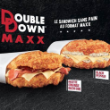
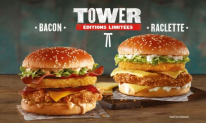
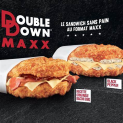
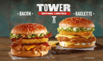
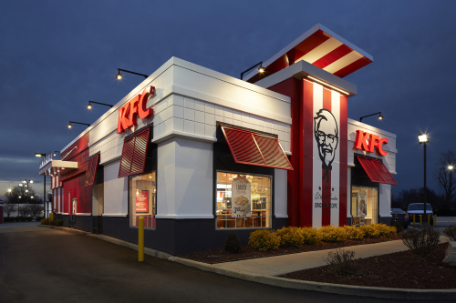

La Chaîne de restauration mondialement connue
Bienvenue dans l'univers délicieusement iconique de Kentucky Fried Chicken, plus communément connu sous le nom de KFC.
Depuis ses modestes débuts dans la cuisine du Colonel Harland Sanders à Corbin, Kentucky, en 1930,
Cette enseigne de renommée mondiale a évolué pour devenir un véritable symbole de saveurs audacieuses et de convivialité.

NOS DERNIERS PRODUITS :
 



NOTRE NOUVEAU RESTAURANT :
 Annemasse
64 Route de Thonon
+33 4 50 04 49 26